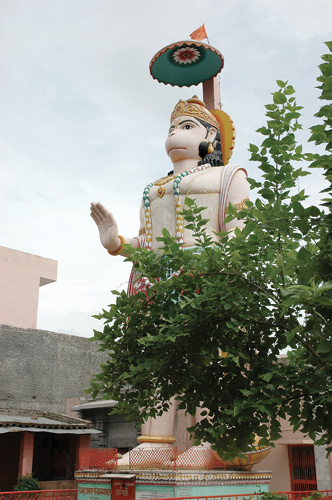
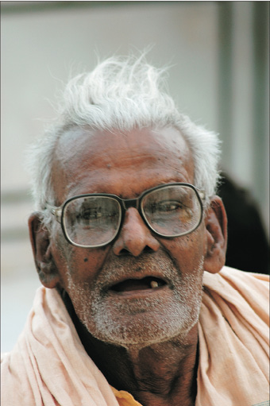

NEPAL, 21 Ağustos

Hindistan.
Kim bilir gördüğümüz kaçıncı fil?
Bugün gördüğüm dev maymun heykeli hayatımda gördüğüm en büyük heykeldi sanıyorum. Bina kadar bir şey.
Düşününce başka bir yerde hayvan heykeli görmedim zaten. Kadıköy’deki boğa, Denizli’deki horozlar hariç. Bazı Hint ve Tibet efsanelerinde, insanların büyülü bir canlı ile bir maymunun beraberliğinden türediğine inanılıyormuş. Hint Tibet dedim çünkü anladığım kadarıyla Hinduizm ile Budizm bazı noktalarda kesişiyor. Hinduizm tanrıları hem insandan üstün hem de insan karakterine sahip. Maymun tanrı Hanuman heykeliydi gördüğümüz. Hanuman Kral Rama’yla beraber kralın kaçırılan eşini kurtaran bir kahraman.
Hindistan’ın her yerinde resimleri sürekli karşımıza çıkan çok ünlü bir adam var. Adam gerçekten tanrı maymun Hanuman’a benziyormuş. Bu kişinin öldüğünü anlıyoruz, çünkü gördüklerimiz fotoğraf değil, ayrıntılı betimlenmiş çizimler. İnsanlar resimlerine bile saygı gösteriyor.
Dediğim gibi başkalarının kutsalına saygı göstermeyi öğrendik. Bu durumu gerçekten garipsemiyoruz. Filler, fareler ve daha başka kutsal hayvanlar…
Aslında bu bir kültür meselesi. Mesela neden ayı Almanya, da ulusal simgedir. Ama Türkiye’de argo ve alçaltıcı bir söz olarak kullanılır. Amerikan Cumhuriyetçi Parti’nin simgesi olan eşek belki daha çarpıcı bir örnek. Fransızların horozu da geliyor aklıma.
Okuduğum bir yerden aklımda kalmış. Bu durum eski totemist inançlarımızdan kaynaklanıyormuş. Aklımdan Türkiye’deki hayvanlarla ilişkili takımları sayıyorum.
Timsah – Bursa
Aslan – Galatasaray
Kanarya – Fenerbahçe vs.
Ben de bisikletime çeşitli hayvan sıfatları yakıştırıyorum sık sık.
Sokakta bu kadar çok hayvan gördükten sonra, biraz daha alıştık bu kültüre. Hayvan figürlü tanrı heykellerine gülümsemeyi becerebiliyoruz ama farelerle aynı kaptan yiyip içmek hâlâ bize çok uzak.

Hindistan
Masal gibi, “bir dudağı yerde bir dudağı gökte.”

Hindistan, Agre.
Yaşamın acımasızca yıprattığı bir Hintli.